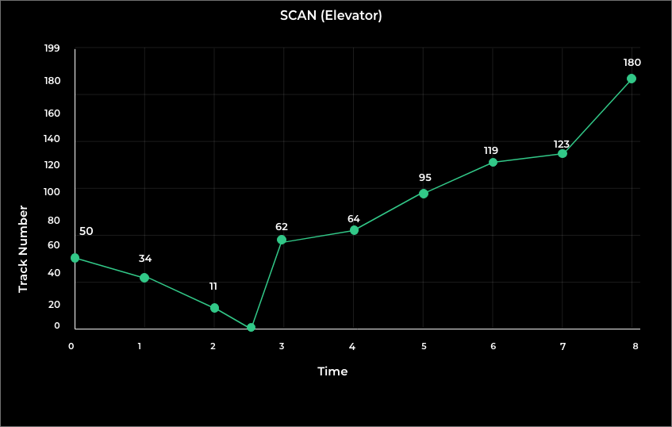

SCAN (Scanning) is a disk scheduling algorithm used in operating systems to manage disk I/O operations. The SCAN algorithm moves the disk head in a single direction and services all requests until it reaches the end of the disk, and then it reverses direction and services all the remaining requests.
In SCAN, the disk head starts at one end of the disk, moves toward the other end, and services all requests that lie in its path. Once the disk head reaches the other end, it reverses direction and services all requests that it missed on the way. This continues until all requests have been serviced.
Example :
Track Range from 0 to 199 and head initially is rested on 50
95, 180, 34, 119, 11, 123, 62, 64
(THM) = (50 – 0) + (180 – 0) = 230
Seek Time = THM * Seek rate = 230 * 5ms
Seek Time = 1150 ms
<
Advantages & Disadvantages :
1. High throughput
2. Almost similar response times
The following are the disadvantages of SCAN scheduling algorithm:
Long waiting times